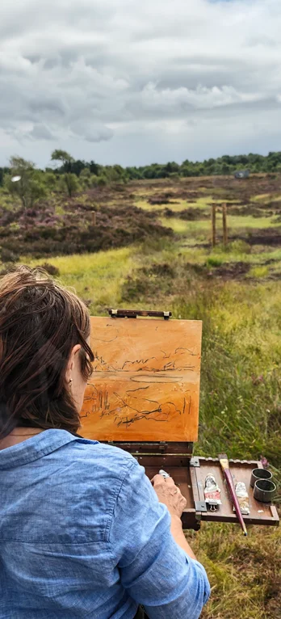

Community Engagement
Cornafulla Micro Reserve brings people together to explore and appreciate the natural, cultural and ecological heritage of Cornafulla Bog and the Shannon Callows. Through walks, talks, workshops and shared experiences, we create opportunities for local residents, landowners and visitors to learn about the landscape, exchange knowledge and take part in its conservation. Our activities range from the Bog Bothy programme of public events in summer 2026 to First Saturdays, our ongoing programme of monthly walks, talks and workshops exploring Cornafulla Bog and the Shannon Callows. We work with local people, researchers and specialists to make knowledge accessible and encourage wider participation in understanding and caring for this landscape.